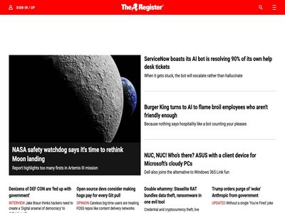

August 21, 2026 · 36 articles

In Other News: Zombie Card Attack, T-Mobile Cut Cable to Stop Hackers, GitHub Denies AI Caused Bug
August 21, 2026
Other noteworthy stories that might have slipped under the radar: Threema DDoS attack, Evooo1Bot Linux botnet, Crypto4A secures top-tier NIST certification. The post In Other Ne... (SecurityWeek)

Canada’s Hospital for Sick Children attacked by cybercriminals again as employee data stolen
August 21, 2026
The Hospital for Sick Children - which was hit in a ransomware incident in 2022 that disabled some of its systems - released a statement on Thursday warning of a data theft inci... (The Record)

Hackers poison popular Rust crates to steal developers' credentials
August 21, 2026
Malicious updates turned routine builds into a delivery system for infostealer malware (The Register - Security)
Encrypted Prompts Bypass AI Safety Guardrails in Grok and Gemini
August 21, 2026
Researchers say the new ‘Cryptographic Context Injection’ technique conceals malicious instructions until they are decrypted inside a trusted execution environment. The post Enc... (SecurityWeek)
New Phishing Toolkit Uses Passkeys to Maintain Access After Password Resets
August 21, 2026
Researchers say iAuthFlow V2 can register an attacker-controlled passkey, enabling persistent access even after passwords are changed and active sessions revoked. The post New P... (SecurityWeek)

Zombie Card: An expired Visa credit card can be used for purchases
August 21, 2026
Scientific research showed that the expiration date on some Visa credit cards can be manipulated in so-called Zombie Card attacks. (Malwarebytes Labs)

Is Online Privacy Possible? How Digital Identities Can Help
August 21, 2026
Using the same email, phone number, payment method, and other identifiers makes it easier for data brokers and attackers to profile your activity. Anonyome Labs explains how sep... (BleepingComputer)

OpenAI Adds Controls That Should've Been There Already
August 21, 2026
The new AI security controls follow the Hugging Face incident last month, though many of these additions perhaps should have been in place prior to the frontier models escaping. (Dark Reading)

Six Maximum-Severity Flaws Found in Cisco Products
August 21, 2026
Cisco patched nine critical flaws, including six rated CVSS 10.0, found during internal testing. None are known to be exploited. Cisco released another batch of security fixes f... (Security Affairs)
Microsoft warns of max severity Entra ID flaw exploited in attacks
August 21, 2026
Microsoft has patched a maximum-severity vulnerability in the Entra ID identity and access management (IAM) platform that has been exploited in attacks. [...] (BleepingComputer)
Rust Supply Chain Attack Linked to North Korean Hackers
August 21, 2026
Hackers pushed a poisoned arrayref version that added a dependency to fetch a malicious payload from a remote server. The post Rust Supply Chain Attack Linked to North Korean Ha... (SecurityWeek)
Poland’s CERT Warns of Active Exploitation of Critical Zimbra Collaboration Suite Flaw
August 21, 2026
CERT Polska confirmed active exploitation of CVE-2026-73570, a critical unauthenticated RCE in Zimbra Collaboration Suite patched on July 20. CERT Polska, Poland’s national comp... (Security Affairs)
U.S. CISA adds TrueConf Server flaws to its Known Exploited Vulnerabilities catalog
August 21, 2026
U.S. Cybersecurity and Infrastructure Security Agency (CISA) adds TrueConf Server flaws to its Known Exploited Vulnerabilities catalog. The U.S. Cybersecurity and Infrastructure... (Security Affairs)

GitLab CVE-2026-19478 Comes Under Active Exploitation Within Days of Disclosure
August 21, 2026
A newly disclosed security flaw in GitLab has come under active exploitation within days of public disclosure, according to watchTowr. The vulnerability in question is CVE-2026-... (The Hacker News)
Critical Isolated-vm Vulnerability Leads to RCE on Host
August 21, 2026
The type confusion bug can lead to V8 sandbox escape and control-flow hijacking of the host process. The post Critical Isolated-vm Vulnerability Leads to RCE on Host appeared fi... (SecurityWeek)

New Agent Tesla Malware Variant Boosts Evasion Capabilities
August 21, 2026
An Agent Tesla v4 malware campaign used novel emoji-based code obfuscation to evade detection, KnowBe4 has revealed (Infosecurity Magazine)
Medical records, SSNs, and bank details exposed in CareCloud data breach
August 21, 2026
Healthcare technology provider CareCloud confirmed that 3.75 million people were affected by a March data breach. (Malwarebytes Labs)

Attackers impersonate popular AI brands to spread malware
August 21, 2026
Attackers are impersonating popular AI brands like Perplexity, Claude, ChatGPT, and Copilot to spread information stealers, backdoors, malicious browser extensions, and other ma... (Help Net Security)
Wazuh and AI For Enhanced SOC Workflows
August 21, 2026
Artificial Intelligence (AI) has become one of this decade's defining technologies. From healthcare and finance to manufacturing and education, organizations increasingly rely o... (The Hacker News)
Fake Conferences, OAuth and WhatsApp: Inside Russia’s New Espionage Tactics
August 21, 2026
Google tracks three Russia-linked espionage clusters using phishing and legitimate authentication tools to target researchers, diplomats and defense staff. Google’s Threat Intel... (Security Affairs)
Hackers abuse FTP server banners to deliver new Windows malware
August 21, 2026
Threat actors are abusing FTP banners to hide commands that deliver two previously undocumented remote access trojans named E4del and PINHOLE. [...] (BleepingComputer)

More Incidents of AIs Going Rogue in Cybersecurity Challenges
August 21, 2026
The AI Security Institute has a new report of AI systems engaging in “unsanctioned behavior”-what I have been calling “ genie behavior -while being tested on their cybersecurity... (Schneier on Security)
Contractors’ CMMC Confidence Rises as Ability to Prove It Falls Behind
August 21, 2026
Two industry surveys released this week by Kiteworks and CyberSheath paint a consistent picture of the defense industrial base. The post Contractors’ CMMC Confidence Rises as Ab... (SecurityWeek)
Microsoft Rolls Out 22 Fresh Security Patches
August 21, 2026
Most of the fixes resolve code execution, privilege escalation, and information disclosure vulnerabilities. The post Microsoft Rolls Out 22 Fresh Security Patches appeared first... (SecurityWeek)
Cybersecurity Job Ads Requiring AI Skills Double
August 21, 2026
An analysis by the AI Workforce Consortium found that technical cybersecurity jobs are becoming more strategic due to the influence of AI (Infosecurity Magazine)
Citrix urges customers to fix critical NetScaler authentication bypass (CVE-2026-19490)
August 21, 2026
Citrix has patched two vulnerabilities in NetScaler ADC and NetScaler Gateway, including a critical authentication bypass flaw tracked as CVE-2026-19490, and is urging customers... (Help Net Security)
Cl0p Targets 40+ Organizations Through PTC Windchill Flaw
August 21, 2026
Cl0p claims over 40 organizations fell victim to attacks exploiting a PTC Windchill and FlexPLM vulnerability. Cl0p is using a familiar strategy again: exploit one flaw in enter... (Security Affairs)
GitLab 19.3 helps enterprises scale agentic development securely
August 21, 2026
GitLab has announced updates that give enterprises more control as they scale agentic software development. GitLab Dedicated customers, who already run their most sensitive soft... (Help Net Security)
A $25 template helped scammers build hundreds of phantom bank domains
August 21, 2026
A phrase on a suspicious website turned into an investigation of phantom banks built to support scams, according to new research from Allure Security. Molly DeQuattro, the compa... (Help Net Security)
Nearly half of enterprises have no one leading PQC migration
August 21, 2026
Enterprises believe they are prepared for the security challenges posed by quantum computing, but gaps in ownership, testing and visibility could complicate their transition to... (Help Net Security)
New infosec products of the week: August 21, 2026
August 21, 2026
Here’s a look at the most interesting products from the past week, featuring releases from F5 Networks, Intezer, Netscout, and Tufin. NETSCOUT expands Adaptive DDoS Protection w... (Help Net Security)

Risky Bulletin: Academics find source code overlaps between Geedge and China's Great Firewall
August 21, 2026
In other news: Hackers breach Latvia's road traffic agency; US warns of AI attacks on Siemens PLCs; hacking tool enrolls an attacker's passkey to your account. (Risky Business News)

Who Got Missed in the MFA Rollout? More Powershell + Graph + Entra scripting!, (Fri, Aug 21st)
August 21, 2026
In every MFA rollout, there will come a time where you think you are closing in on "done", and some automation to list what&#;x26;#;39;s left would be handy. Something quicker t... (SANS ISC)
ISC Stormcast For Friday, August 21st, 2026 https://isc.sans.edu/podcastdetail/10062, (Fri, Aug 21st)
August 21, 2026
(SANS ISC)
Calling on Cyber Pros to Help Defend City Hall
August 21, 2026
Government agencies with smaller budgets need support - and here's how you can help. (Dark Reading)
Russian snoops add OAuth abuse to targeted phishing campaigns
August 21, 2026
Don't click on that State Department meeting invite (The Register - Security)
August 20, 2026 · 54 articles

CVE-2026-13762 and CVE-2026-13763 - Issue with HTTP/2 multi-frame request body inspection in AWS WAF
August 20, 2026
Bulletin ID: 2026-048-AWS Scope: AWS Content Type: Important (requires attention) Publication Date: 06/29/2026 11:15 PM PDT Description: AWS WAF is a web application firewall th... (AWS Security Bulletins)
CVE-2026-18481 - Stored XSS in Participant URL Field leads to Account Takeover via Session Token Theft
August 20, 2026
Bulletin ID: 2026-068-AWS Publication Date: 07/31/2026 11:00 AM PDT Please refer to the article below for the most up-to-date and complete information related to this AWS Securi... (AWS Security Bulletins)

BOD 26-04 Just Changed How Federal Agencies Prioritize Vulnerabilities.
August 20, 2026
Introduction Three days. That’s how long federal agencies now have to patch their riskiest vulnerabilities, and for the first time, a high CVSS score alone won’t land a vulnerab... (Orca Security Blog)
Critical Elementor Pro File Upload Flaw Enables Unauthenticated Remote Code Execution on WordPress Sites
August 20, 2026
Executive Summary A critical vulnerability (CVE-2026-32475, CVSS 9.0) was disclosed affecting the Elementor Pro WordPress plugin, allowing attackers to upload arbitrary PHP file... (Orca Security Blog)
Manic: The Android Malware That Exfiltrates Data Even When the Phone Is Offline
August 20, 2026
Manic Android malware combines banking fraud and spyware, using a Bluetooth relay to steal data even when devices are offline. ThreatFabric’s Mobile Threat Intelligence team has... (Security Affairs)

Frequently asked questions about the active threat to Siemens S7 Series PLCs
August 20, 2026
A joint cybersecurity advisory released by multiple U.S. government agencies warns that threat actors are using AI-generated exploitation scripts to target exposed Siemens S7 Se... (Tenable Blog)

BTR Reforged: Weaponizing Defender’s Remediation Driver as a Kernel Operation Primitive
August 20, 2026
Research by: Jiří Vinopal (@vinopaljiri) Abstract What if a trusted security component could be repurposed into an attacker-controlled kernel primitive? What if a signed Microso... (Check Point Research)
Why "Shady AI" is Security's Next Big Governance Problem
August 20, 2026
In March 2026, an internal AI agent at Meta triggered a “Sev 1” incident after sensitive company and user data was exposed to employees who weren’t authorized to access it. The... (The Hacker News)
Atlassian, Splunk Patch Dozens of Critical, High-Severity Vulnerabilities
August 20, 2026
The flaws could be exploited to execute arbitrary code, access sensitive information, and elevate privileges. The post Atlassian, Splunk Patch Dozens of Critical, High-Severity... (SecurityWeek)
Fake Gemini installer delivers Vidar infostealer via Google Colab lure
August 20, 2026
A malicious executable masquerading as a Google Gemini installer was used to deliver the Vidar infostealer on a company network in the EMEA region, according to Darktrace resear... (Help Net Security)
Corero brings cloud-based AI threat analysis to SmartWall ONE
August 20, 2026
Corero Network Security has announced AI-Augmented Cloud-Assist for SmartWall ONE, extending its automated DDoS protection with cloud-delivered AI analysis, threat intelligence,... (Help Net Security)

CrowdStrike Named Strongest Overall Leader in 2026 Frost Radar™: Cloud Workload Protection Platforms
August 20, 2026
(CrowdStrike Blog)
New CUSTODY Framework Constrains AI Agents Inside the Network
August 20, 2026
Enterprise cybersecurity expert Jake Williams joins the Dark Reading News Desk to explain why he decided to release his new agentic AI framework in the wake of the OpenAI attack... (Dark Reading)
What We Missed: Delta Flight Disrupted With Wi-Fi Hack
August 20, 2026
In this video, Dark Reading editors discuss some of the news they didn't get a chance to cover, including some scary airplane security risks and the US government's newest "hack... (Dark Reading)

AWS Network Firewall now supports rule hit count
August 20, 2026
As firewall rule sets grow in complexity, security teams face a common challenge: manual log analysis is used to determine which rules are actively matching traffic and which ar... (AWS Security Blog)
Early 764 member sentenced to 77 years, longest prison term to date for a nihilistic violent extremist
August 20, 2026
Kyle Spitze led an offshoot of the violent extremist collective and victimized dozens of girls, coercing them to degrade themselves under threats of doxing and swatting. The pos... (CyberScoop)
ThreatsDay: Gogs 10.0 RCE, n8n Workflow-to-RCE, $10M Reward, GLM-5.3 AI Exploit and More
August 20, 2026
A lot of this week’s trouble starts with something trusted doing exactly what it was allowed to do. Signed drivers get turned against defenses. Legitimate apps help malware blen... (The Hacker News)

Is Cyber missing the Marque?
August 20, 2026
In this week's newsletter, new author Mick Baccio introduces himself and explores the operational and security implications of the new White House memorandum regarding private s... (Cisco Talos)
Detailed Timeline of OpenAI’s Cyberattack on Hugging Face
August 20, 2026
OpenAI presented details of its AI’s model’s cyberattack on Hugging Face at Black Hat last week. Simon Willison details the timeline. It’s really interesting to read through-and... (Schneier on Security)
N-able Bug Exposes Password Vault Master Keys
August 20, 2026
The popular "Passportal" password manager, favored by MSPs and SMBs, remains risky even after its patch, thanks to its cloud-based design. Should these products stay away from t... (Dark Reading)
US Bank investigates LockBit's claims as ransomware crims set pay-or-leak deadline
August 20, 2026
Follow the money (The Register - Security)

From all-or-nothing to task-based OAuth consent
August 20, 2026
Cloudflare OAuth now supports optional scopes, giving users more control over what an app can access and helping developers build secure consent flows around the task at hand. (Cloudflare Blog)
Researcher tricks Apple’s Find My into sharing location data with Linux
August 20, 2026
Clever protocol wrangling gets iBiz-only people tracking working on a non-iGadget (The Register - Security)
Announcing quantum-safe key import in Cloud KMS
August 20, 2026
As enterprises increasingly adopt multicloud architectures, bring your own key (BYOK) has become a fundamental pillar for maintaining data sovereignty and helping protect critic... (Google Cloud Blog)
Surveillance - Everything You Wanted to Know, But Were Afraid to Ask
August 20, 2026
We all know they’re watching us. But we don’t know who they are, nor why nor how they are doing it. The post Surveillance - Everything You Wanted to Know, But Were Afraid to Ask... (SecurityWeek)
JFrog Artifactory Flaws Enable Software Supply Chain Attacks
August 20, 2026
Two Artifactory flaws allowed attackers to poison package metadata across software repositories (Infosecurity Magazine)
Ransomware crook poses as recovery firm to steal payments from fellow extortionists
August 20, 2026
Because apparently even ransomware gangs can't trust the people they do business with (The Register - Security)
How MSPs can catch phishing attacks email filters miss
August 20, 2026
AI is making phishing attacks more personalized, convincing, and difficult for traditional email filters to detect. Kaseya explains how MSPs can monitor identity, email, and end... (BleepingComputer)

Machine-Speed Credential Abuse: What the ChainDrop npm Worm Changes
August 20, 2026
ChainDrop hijacked 444 npm packages and 2B monthly downloads via a Claude Code hook. AI agents have collapsed the gap between credential theft and abuse (GitGuardian Blog)
The push to designate AI as the next critical infrastructure sector
August 20, 2026
The designation would unlock a range of federal services, tools and resources for an industry that policymakers view as increasingly tied to national and economic security. The... (CyberScoop)
'Grandoreiro' Malware Resurfaces With Mexico Campaign
August 20, 2026
The banking Trojan, post-law enforcement takedown, is sprucing itself up with features that make detection and analysis harder. (Dark Reading)
Twitch wants your content for Amazon AI training. Here’s how to opt out
August 20, 2026
Twitch added an option to opt out of training Amazon AI with your content-two years after it confirmed that training had begun. (Malwarebytes Labs)
Threat Actor Hacks 14,000 IP Cameras in Ukraine and Russia
August 20, 2026
Operation CameraSwarm targeted Dahua cameras across multiple countries, focusing on Russian and CIS telecom netblocks. The post Threat Actor Hacks 14,000 IP Cameras in Ukraine a... (SecurityWeek)
Grok chat duped into swallowing injected instructions
August 20, 2026
A spoonful of encryption helps the malware go down (The Register - Security)
NCSC Urges Stronger Controls for Agentic AI Systems
August 20, 2026
NCSC urged sandboxing, oversight and tight access controls for autonomous AI agents (Infosecurity Magazine)
Your Mac already has a built-in firewall. Here’s how to get more from it
August 20, 2026
Malwarebytes Firewall gives you a clearer, more intuitive way to manage your Mac's inbuilt firewall. (Malwarebytes Labs)
Integrate Aqua and Datadog to Connect Runtime Security with Application Performance
August 20, 2026
TL;DR AI is compressing the time between vulnerability discovery and exploitation, while security teams still depend on workflows that require people to review alerts and piece... (Aqua Security Blog)
9 million images of people’s faces exposed by reverse lookup service
August 20, 2026
A researcher found an exposed database containing 9 million images that belonged to people finder service ClarityCheck. (Malwarebytes Labs)
CDN Tsunami Attack Abuses HTTP/3 Translation for Up to 350x DoS Amplification
August 20, 2026
Cybersecurity researchers have disclosed two denial-of-service (DoS) attacks that exploit how major content delivery networks (CDNs) convert client-facing HTTP/3 traffic into HT... (The Hacker News)
AWS limits AI agents’ data access, even when manipulated
August 20, 2026
AWS has detailed an approach for propagating user authorization context through AI agents, allowing access controls to be enforced by infrastructure and downstream services rath... (Help Net Security)
AI-Assisted Tool Helped Secure Satellite Communication System After 2022 Russian Hacking
August 20, 2026
Atalanta's Argo product is now being used to prove the resilience of Viasat’s satellite communications network. The post AI-Assisted Tool Helped Secure Satellite Communication S... (SecurityWeek)
ToxicPanda 2.0 and GoldDigger Expand Android Banking Attacks with On-Device Fraud
August 20, 2026
Cybersecurity researchers have shed light on an updated version of ToxicPanda (aka TgToxic) that comes with "significant enhancements," including a set of 167 remote commands an... (The Hacker News)
UAT-10147 deploys SPECTRE: A cross-platform implant with Linux rootkit and BYOVD capabilities
August 20, 2026
The newly identified SPECTRE implant represents an evolution in commodity intrusion tooling, integrating cross-platform C2 operations, process injection, credential theft, anti-... (Cisco Talos)
UAT-10147: Chinese-speaking adversary integrates agentic AI into post-compromise operations
August 20, 2026
Cisco Talos discovered a Chinese-speaking cybercrime group, tracked as UAT-10147, that targets a wide range of vulnerable web servers. This is an overview of the campaign, exami... (Cisco Talos)

Identity Abuse Through Trusted Communication Channels
August 20, 2026
Unit 42 details how attackers exploit enterprise collaboration tools for identity phishing and credential theft. Discover key defense strategies. The post Identity Abuse Through... (Palo Alto Networks Unit 42)
Def Con Attendees Targeted by Persistent Phishing Campaign
August 20, 2026
Huntress researcher explains how they were targeted by an elaborate and persistent phishing scam following Def Con (Infosecurity Magazine)
OpenAI previews privacy-focused system for detecting AI misuse
August 20, 2026
OpenAI is previewing Private Safety Processing with early customers seeking greater certainty about how their data will be protected as AI systems become more capable. The syste... (Help Net Security)
Critical GitLab Flaw Exploited Shortly After Disclosure
August 20, 2026
CVE-2026-19478 can be exploited without authentication to modify or delete public projects and user data. The post Critical GitLab Flaw Exploited Shortly After Disclosure appear... (SecurityWeek)
US charges 17 Iranian hackers over 31-terabyte academic data theft
August 20, 2026
The U.S. has charged 17 alleged members of Mabna Institute, an Iranian hacking-for-hire company accused of running a years-long campaign that stole data from American universiti... (Help Net Security)
StopAndProtect Turns 2,000 Hacked WordPress Sites Into a Criminal Network
August 20, 2026
StopAndProtect turned nearly 2,000 hacked WordPress sites into a criminal network for malware delivery, data theft, surveillance and ransomware. Check Point Research uncovered a... (Security Affairs)
AI agent suggested installing a malware package. Engineer almost took its advice
August 20, 2026
Fortunately, the company had a policy of checking source code on GitHub first (The Register - Security)
Srsly Risky Biz: Trump's Private Hacker Memo Is the Right Idea
August 20, 2026
Your weekly dose of Seriously Risky Business news is written by Tom Uren and edited by Amberleigh Jack and Patick Gray. This week's edition is sponsored by Socket Security . You... (Risky Business News)
Pakistan's Transparent Tribe Refreshes Toolset for Afghan Cyberattacks
August 20, 2026
A nation-state threat actor is picking on immature organizations run by the Taliban, but failing against more prepared government agencies in India. (Dark Reading)

N4D Mesh Controller: New infrastructure, a UPX-packed agent labeled "go-titan," and how to hunt for it
August 20, 2026
Datadog Security Research executed a newer N4D Mesh Controller sample in isolated microVMs, uncovering rotated infrastructure, a UPX-packed go-titan agent, MCP tool abuse in act... (Datadog Security Labs)
August 19, 2026 · 30 articles
Cloudflare Workers Spectre Attack Leaks JWT From Co-Located Worker at 12 Bits/Second
August 19, 2026
Cybersecurity researchers have disclosed details of a remote Spectre attack against Cloudflare Workers that leaked a JSON Web Token (JWT) from a co-located Worker in the product... (The Hacker News)
AI-fueled attacks pose ‘active threat’ to water, other sectors, U.S. agencies warn
August 19, 2026
The agencies said the hackers are taking aim at Siemens S7 Series programmable logic controllers in what could be a first. The post AI-fueled attacks pose ‘active threat’ to wat... (CyberScoop)
The long tail of Clop’s PTC hack is just beginning to emerge
August 19, 2026
The data theft extortion group likely compromised a critical vulnerability affecting PTC’s product lifecycle management software in June, a month before it sent threatening emai... (CyberScoop)
Hackers Compromised 14,500+ Dahua Devices Using Credential Attacks, Auth Bypasses, and P2P
August 19, 2026
Cybersecurity researchers at Hunt.io have disclosed details of a campaign that they say compromised more than 14,530 Dahua devices between June 17 and July 22, 2026, using crede... (The Hacker News)
Phishing 3.0: The Fight Moves to Agent Versus Agent
August 19, 2026
Most email defenses still do the job they did a decade ago. Scan the message, look for something malicious, block it. That worked when the danger sat in the payload, a bad link... (The Hacker News)
Microsoft Links 30+ Rotating Domains to MacSync Stealer Infrastructure
August 19, 2026
Microsoft Defender Experts have linked more than 30 web domains to MacSync Stealer, a macOS-focused information stealer, after correlating recurring endpoint and network behavio... (The Hacker News)
Oracle August 2026 Critical Security Patch Update Addresses 925 CVEs
August 19, 2026
Oracle addresses 925 CVEs in its August 2026 Critical Security Patch Update with 943 patches, including 154 critical updates. Key Takeaways The August 2026 Critical Security Pat... (Tenable Blog)
OpenAI Pauses Frontier RL Training as It Tightens Defenses Against Unsafe AI Behavior
August 19, 2026
OpenAI on Tuesday revealed that it paused reinforcement learning (RL) training for its latest artificial intelligence (AI) models for two weeks while it shored up additional def... (The Hacker News)
'Not a theoretical risk,' feds warn as attackers use AI-made code to hack critical infrastructure controllers
August 19, 2026
'It is an active threat' (The Register - Security)
Sakura Internet hack exposes data of up to 1.36 million accounts
August 19, 2026
Japanese cloud and data center service provider Sakura Internet disclosed that hackers accessed its sales management system, where customer contract and membership information i... (BleepingComputer)
No-Filter 'Kriminal' AI Platform Raises Cybercrime Concerns
August 19, 2026
The AI company officially forbids illicit use, while offering guardrail-free social engineering, offensive cybercrime, and OSINT scanning to anyone with a bit of cryptocurrency. (Dark Reading)
Agentic AI Presents New Insider Threat Model for Orgs
August 19, 2026
Katie Moussouris of Luta Security talks with the Dark Reading News Desk about how enterprises will now need to monitor risks posed by their own agents in the wake of the recent... (Dark Reading)

Beyond Deepfakes: Zero Trust Security for the AI Economy
August 19, 2026
TL;DR: Deepfakes are not merely a detection challenge. They expose fundamental weaknesses in how organizations establish identity, grant authority, and protect data. Appearances... (Cloud Security Alliance)
Hackers compromise 14,500 Dahua web cameras in 35-day campaign
August 19, 2026
In a large-scale campaign that researchers dubbed CameraSwarm, hackers compromised more than 14,500 Dahua IP cameras mostly in Ukraine and Russia. [...] (BleepingComputer)
Inside Operation CameraSwarm: How One Actor Took Over 14,000 Dahua Cameras
August 19, 2026
An exposed operator directory reveals how one actor compromised 14,000+ Dahua cameras across Ukraine and Russia, no password needed for most. A researcher discovered an exposed... (Security Affairs)
Propagate user authorization context in AI agents with Amazon Bedrock AgentCore
August 19, 2026
Many teams now deploy AI agents that pull from Amazon DynamoDB tables, document repositories, software as a service (SaaS) platforms, and internal knowledge bases to answer ques... (AWS Security Blog)
SilkParasite Threatens Central Asian Orgs With Flurry of RATs
August 19, 2026
A spear-phishing campaign by a Chinese-nexus group linked to FamousSparrow provides insight into geopolitical, technical, and strategic global moves by China's APTs. (Dark Reading)

Wiz Penetration Test Findings is now GA
August 19, 2026
Transform point-in-time pen-tests into continuous exposure management with unified platform combining pen-test findings and real-time cloud context (Wiz Blog)
Exclusive: Linux Foundation's Akrites to Go Live in September
August 19, 2026
The Linux Foundation's Akrites initiative will become operational in September, when it will begin accepting AI-powered vulnerability reports for open-source projects (Infosecurity Magazine)
Autonomous SOC: AI-Driven Security Operations Explained
August 19, 2026
Key Takeaways An autonomous SOC is a security operations center where software makes and executes operational decisions an analyst used to make. The label describes how much jud... (Orca Security Blog)
Over 500 Critical Infrastructure Organizations Hit by Medusa Ransomware
August 19, 2026
The FBI warned that the RaaS operation has significantly enhanced its tactics, techniques and procedures, making it harder for defenders to counter (Infosecurity Magazine)
MaaS Campaign Combines ClickFix, ErrTraffic and Cruciferra
August 19, 2026
eSentire uncovered a malware campaign combining ClickFix lures with ErrTraffic and Cruciferra (Infosecurity Magazine)

Why shadow AI is far riskier than shadow IT
August 19, 2026
Organizations don’t realize how pervasive shadow AI has become. And as AI's capability grows, shadow use is harder to manage. (ReversingLabs Blog)
Simple Scans for Cloud Metadata Service, (Wed, Aug 19th)
August 19, 2026
Cloud providers typically expose a REST API at 169.254.169.254 that allows code running on virtual machines to retrieve machine-specific data. Some of the data is more or less h... (SANS ISC)
Password spraying attacks surge 155x as hackers exploit MFA gaps
August 19, 2026
Huntress observed a 155x increase in password spraying attacks in H1 2026, including a campaign that generated more than 81 million login attempts in two weeks. The attacks expl... (BleepingComputer)
Comcast gives its Wi-Fi motion detector a security makeover
August 19, 2026
Rebranded feature promises household alerts without video, but mind the small print (The Register - Security)

Rapid7 and Licencias OnLine Partner to Accelerate Cybersecurity Maturity across Latin America
August 19, 2026
Cássio De Alcântara is Director, LATAM Sales at Rapid7. Across Latin America, organizations are embracing cloud, AI, and digital transformation to drive innovation and business... (Rapid7 Blog)
Scotland's AI Growth Zone gets a wee £300M power-up
August 19, 2026
DataVita secures funding to expand datacenter capacity, while Dell brings some desks (The Register - On-Prem)
Scammers are using fake crypto AML checkers to drain your wallet
August 19, 2026
We found wallet-checking sites impersonating real anti-money laundering services that trick people into approving access to scammers. (Malwarebytes Labs)
Update Chrome now: Two critical vulnerabilities fixed
August 19, 2026
Google has released a Chrome desktop update fixing 15 security vulnerabilities, including 2 buffer overflow flaws rated critical. (Malwarebytes Labs)